聊聊JVM
Java Virtual Machine
对于java虚拟机咱们写是需要专门写一篇来做下知识梳理的，将从以下各点内容铺开叙述JVM的结构与机制：
- 内存结构
- Garbage Collection
- JIT(Just in Time)
- AOT(Ahead on Time)
- ClassLoader
内存结构
对于一个虚拟机架构的语言引擎，在启动时已经按照一定的方式将内存分类分区进行了调整。而对于JVM来说，内存结构分为6块，其结构如下图：
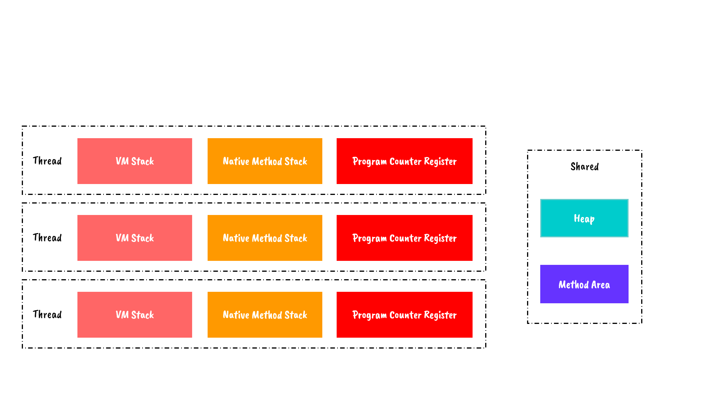
包括公共共享的堆与方法区与线程内的程序计数器、虚拟机栈和本地方法栈
程序计数器
程序计数器标记当前进程序进程执行字节码的地址，分支、循环、跳转、异常处理与线程恢复等功能都依赖其完成。注意区分该处的程序计数器与操作系统的进程内的计数器，该处的程序计数器供给java线程使用。而对于Native方法不由JVM托管，故执行Native方法不需要PC寄存器。
本地方法栈
为本地方法服务。需要理解的是，执行其实还是操作系统在执行，JVM的本地方法栈只对方法压栈与出栈。
虚拟机栈
FIFO的策咯用栈来表示再合适不过了，在计算机系统中常用入栈/出栈来实现方法的调用/返回。在JVM中，将方法的局部变量表、操作数栈、动态链接和方法的返回构造成一个栈帧，并对其调用进行不断的压栈与出栈操作。
栈内与代码执行关系如下图：
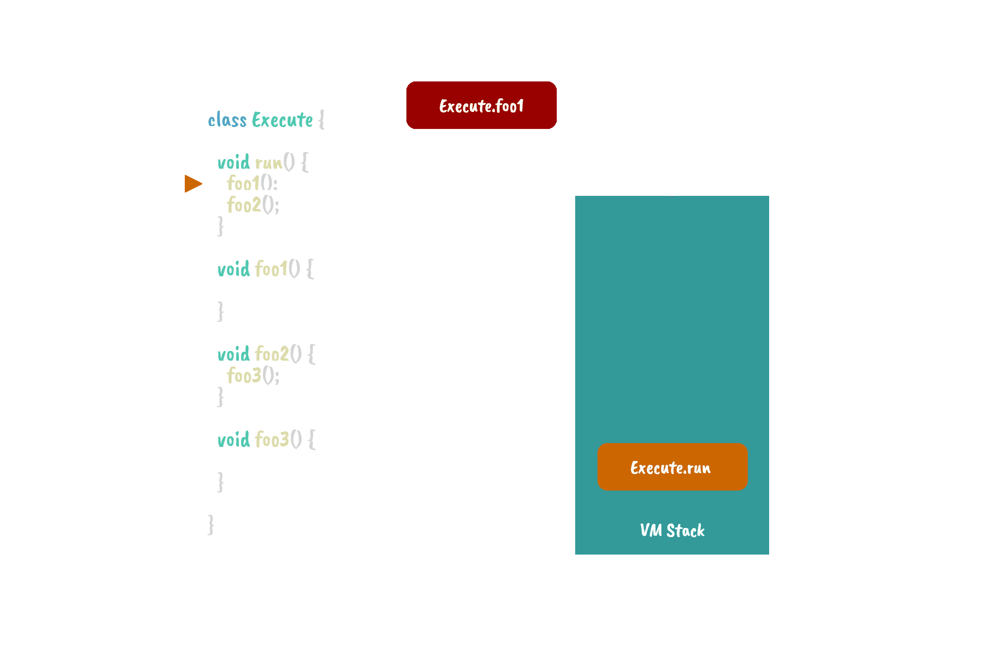
我们可以看到所有的方法执行都是入栈/出栈的操作，那么一个递归没写出口会爆栈就是上图这个栈爆了。
而压入栈的每个栈帧记录着方法的：
局部变量表: 用于存放方法的参数和和方法内定义的局部变量的的存储空间。在编译时，已经确认好改块内存区域的大小。在运行时，改变量表默认0号位置存放当前对象的指针（this）。
操作数栈: 该块内存同局部变量表，在编译时以确定大小。通过压栈/出栈实现计算。
动态链接: 当执行过程中需要调用一个方法，需要使用其名字（符号引用）找到对应的类和方法（直接引用），在运行时对符号引用解析成直接引用就叫动态链接。
返回地址: 方法结束后需要返回到指定的位置，比如正常返回结果后要回到其被调用的赋值语句、异常退出后要回到被调用的catch语句以确保程序继续运行。
堆
堆是被所有线程共享的一块内存区域，在虚拟机启动时创建。这个区域是用来存放对象实例的，几乎所有对象实例都会在这里分配内存。内内部的内存布局为GC的分代算法提供支持，具体内容由GC展开。
方法区
属于共享内存区域，存储描述类信息、常量、静态变量和JIT后的代码。
Garbage Collection
作为一个高级语言，不写析构和手动del是java能提升开发效率与降低开发人员门槛的重要特性，必然的，GC就是不得不说与不得不理解的一个东西。
本文将从以下几个问题来说明JVM的GC:
- 怎么判断是不是垃圾
- 如何做垃圾处理
- 如何做垃圾分类
是不是垃圾
To Be or Not to Be?
如何智能的判断当前内存里面的东西是不是死了，这是一个令人困扰的事情。在C++11以后我们可以通过显示的声明shared_ptr和week_ptr来实现基于引用计数的GC(Reference Counting GC)，令人兴奋的是引用计数非常便于理解，当有引用添加时计数器+1，当引用失效时计数器-1，在计数器发现引用次数为0时内存数据被销毁，而相互引用使用弱引用week_ptr来防止相互依赖的对象内存永远不会被销毁导致的内存泄漏。这个实现优雅而实时，不用担心GC工作太久带来的时停，缺点就是需要显示的声明强弱引用，而java作为友好的工程语言，所以自然不会用这种方式。
JVM先将内存分配管理交由虚拟机，再通过对栈内引用进行tracing，在栈内引用的对象链上的就是可达的，反之不可达。
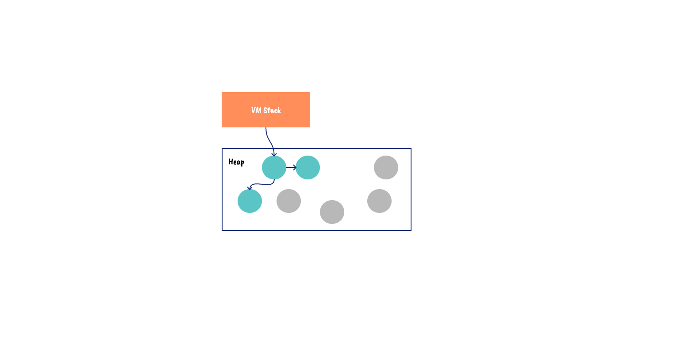
如何做垃圾处理
对于Reference Counting GC来说垃圾回收是瞬时且不中断的，不需要进行更多的设计。而基于tracing的则需要有独立的GC线程对内存区域进行扫描，那么扫描后如何进行清理呢？
标记-删除
tracing后标记可达后，简单的将不可达的内存空间清空。
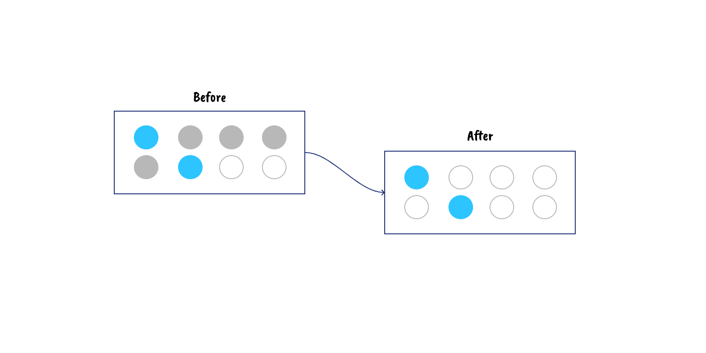
标记-压缩
tracing后标记可达后，将可达的内存移动压缩至内存一侧，减少内存碎片。
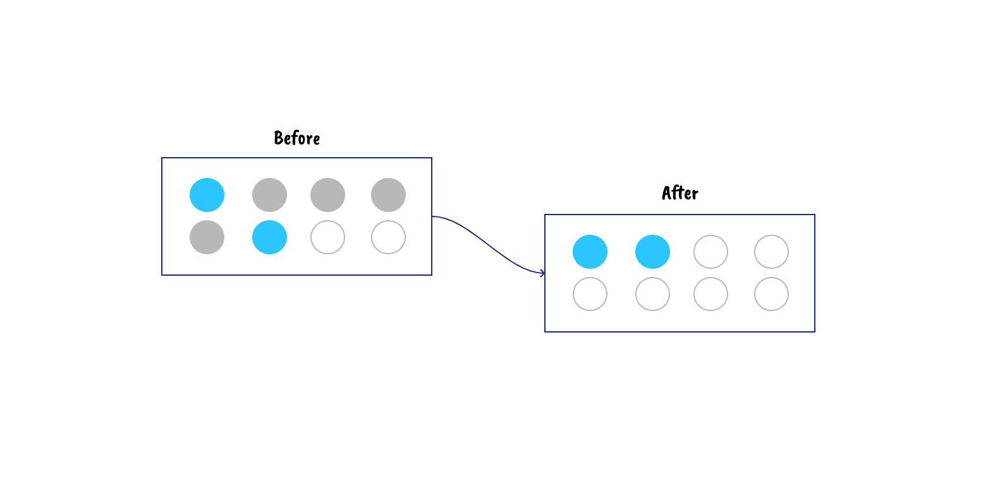
标记-复制
由两块同样大小的内存组成，将标记可达的内存按顺序复制到另一块内存，在启用改内存后清空原内存空间。
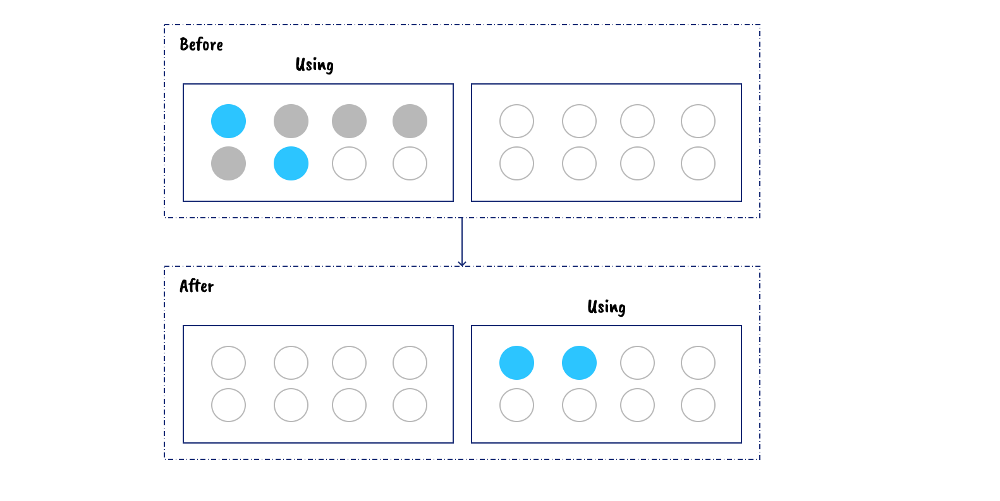
如何做垃圾分类
JVM通过将对象存活周期做划分，将其分代回收来减少扫描压力。在JVM的堆中，将内存分带划分为以下部分
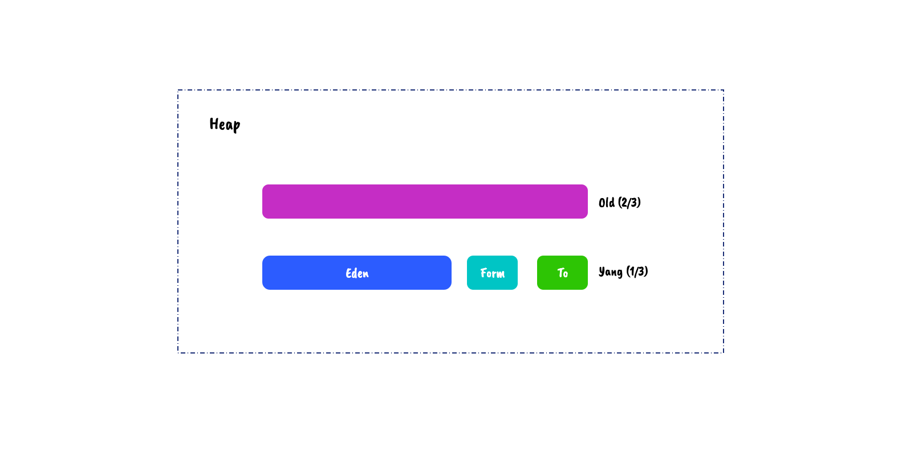
对于GC，我们将从年轻代空间（包括 Eden 和 Survivor 区域）回收内存称为 Minor GC;将老年代的GC（伴随一次Minor GC）称为Full GC（或 Major GC）。
新生代
新生的对象存放在这里哦。而新生代占总内存的1/3，其中又可以详细分为一个Eden和两个Survivor。
Eden
伊甸区，顾名思义，是新生的对象存放的地方，占总新生代的4/5。在GC发生后，一块Eden和一块正在使用的Survivor一齐进行标记-复制，将存活的对象复制到另一块Survivor中并将当前Eden和Survivor清空，可以看出，在默认的比例中，每次GC后新生代中的存活对象不会超过10%（一块Survivor），而超过Survivor的会交由老年代分配担保。
Survivor
当Eden区GC后幸存的对象会移动到Survivor区。Survivor区有两个，每个占新生代的1/10。两块Survivor进行标记-复制的回收策略，所以真实可用的只有其中的一块。
新生代GC时
Survivor Form和Eden中的对象会进行标记复制：
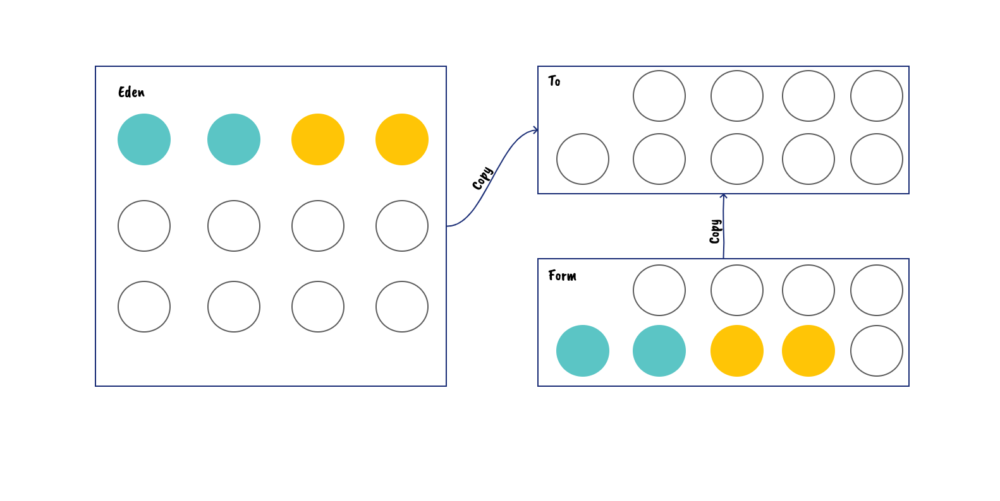
复制完成后Survivor Form和Survivor To指针会互换：
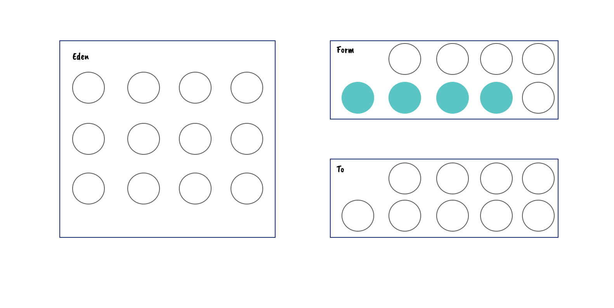
而当form和survivor中的存活对象大于to可容纳的对象空间时，就需要将剩余的对象放入老年带中，即老年代要进行分配担保。而分配担保是要在老年代拥有空余的空间的前提下进行的，而又因为每次存活下来的对象数量不可预知，所以取每次GC后晋升至老年带的对象数量的平均作为参考，从概率上来看，陡然激增对象是很少发生的，所以基本上这个参考的值做判断没有问题。那么我们可以总结出分配担保的流程如下：
- form和survivor中的存活对象大于to可容纳的对象空间
- 判断每次晋升的对象数量均值与老年带剩余空间比较，若大于该空间，则触发Full GC,否则继续
- 将对象尝试分配至老年带，成功则结束，失败则触发Full GC
老年带
老年代认为对象存活率高，不需要时常GC，故而一般使用标记-删除和标记-压缩。
永久区
java8已经被删除了哦，这部分是存放类信息，已经移到Metadata里了哦。（至于说Method area，这个指的是概念而不是实现）
JIT(Just in Time)
对于VM来说，interpreter是最简单的，但是JVM可不是单单一个解释器就搞定了。其实现了JIT编译(just-in-time compilation)即即时编译，什么意思呢？
JVM判定热点代码，在另外的进程将热点代码从字节码编译成机器码，而在后续的热点代码执行则跳过解释器直接执行机器码来达到性能优化。
我们可以通过流程图理解
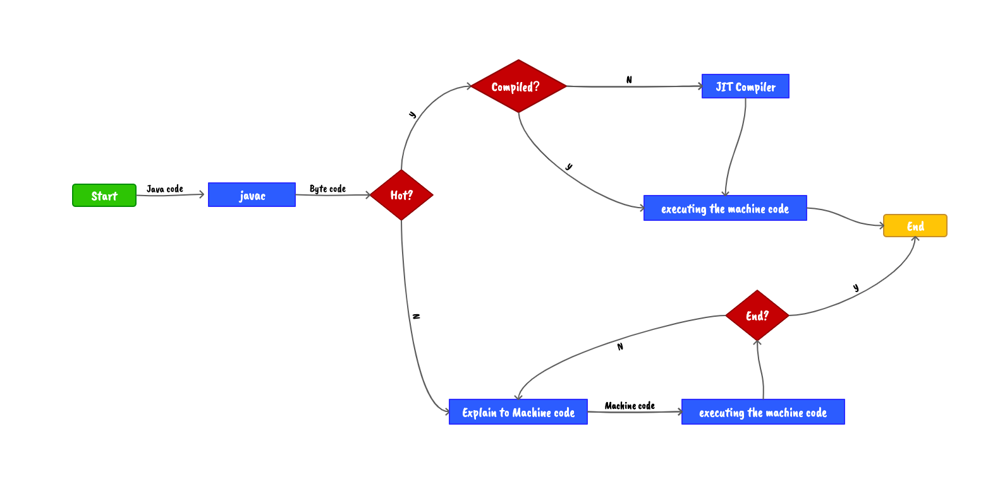
在程序运行环境中内存资源限制较大时，可以使用解释执行节约内存（因为机器码会被缓存在Method area），反之可以使用编译执行来提升效率。当通过编译器优化时，发现并没有起到优化作用，可以通过逆优化退回到解释状态继续执行。
如何判Hot
- 基于采样
栈顶定期采样，出现频繁的为hot。基本上该方式就是在定期看执行的方法，看到谁多谁就热。 - 基于统计
每个方法加个计数器，调了就加，多了就热。（这里计数器不单指对方法单元，还对方法内的回边操作另设计数器）
编译器
JVM的JIT有两个Compiler:
- Client Compiler (C1)
- Server Compiler (C2)
而和GC策略很像的是，JVM同样为了折中做了分层策略：
- 第 0 层：程序解释执行，解释器不开启性能监控功能，可触发第 1 层编译。
- 第 1 层：也称为 C1 编译，将字节码编译为本地代码，进行简单，可靠的优化，如有必要将加入性能监控的逻辑。
- 第 2 层（或 2 层以上）：也称为 C2 编译，也是将字节码编译为本地代码，但是会启用一些编译耗时较长的优化，甚至会根据性能监控信息进行一些不可靠的激进优化。
实施分层编译后，Client Compiler 和 Server Compiler 将会同时工作，许多代码都可能会被多次编译看，用 Client Compiler 获取更高的编译速度，用 Server Compiler 获取更好的编译质量，在解释执行的时候也无须再承担收集性能监控信息的任务。
AOT(Ahead on Time)
编译器出来的东西比解释器快是开发者的共同认知。将优化交给编译器，并通过编译时的优化策略来提升性能，而JIT可以理解为是一个杂交的编译器与解释器，以方法为单位进行编译优化。而AOT需要的是将运行时的编译动作提前到编译时，在JAVA9以后提供该特性，但是服务端的大部分框架支持并不是很好，更多用到的还是android。
优点非常明显：
- 不用运行时的性能监控及JIT编译器一直吃我们的CPU
- 方法区也不用浪费内存放机器码
缺点就是全编译，并且失去平台无关性。
ClassLoader
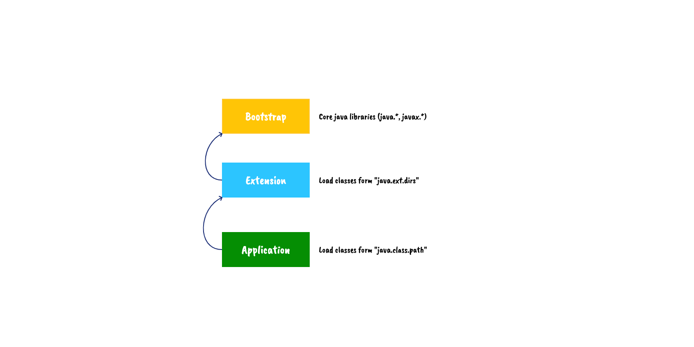
三个ClassLoader分别负责加载对应的类，而加载一个类时，使用双亲委派策略，类装载器有载入类的需求时，会先请示其Parent使用其搜索路径帮忙载入，如果Parent 找不到,那么才由自己依照自己的搜索路径搜索类。
而最顶级的加载器BootstrapClassloader是C++实现的，仅逻辑存在，在Java中无类型定义。
而类加载器是同步的（线程安全），同一个类只会被加载一次。